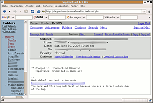

Squirrelmail
Dieser Artikel wurde für die folgenden Ubuntu-Versionen getestet:
Dieser Artikel ist mit keiner aktuell unterstützten Ubuntu-Version getestet! Bitte diesen Artikel testen und das getestet-Tag entsprechend anpassen.
Zum Verständnis dieses Artikels sind folgende Seiten hilfreich:
Squirrelmail  ist eine einfache Webmailoberfläche, die im Hintergrund auf einen IMAP-Server zugreift. Man benötigt also kein Mailprogramm, sondern kann über eine Webseite auf die Mailbox zugreifen, wie man es auch von den großen Freemail-Anbietern gewöhnt ist. Das ist praktisch, wenn man bspw. aus einem Internet-Café auf seine Emails zugreifen will, oder wenn man am Arbeitsplatz durch eine Firewall eingeschränkt wird, die nur HTTP-Verkehr erlaubt.
ist eine einfache Webmailoberfläche, die im Hintergrund auf einen IMAP-Server zugreift. Man benötigt also kein Mailprogramm, sondern kann über eine Webseite auf die Mailbox zugreifen, wie man es auch von den großen Freemail-Anbietern gewöhnt ist. Das ist praktisch, wenn man bspw. aus einem Internet-Café auf seine Emails zugreifen will, oder wenn man am Arbeitsplatz durch eine Firewall eingeschränkt wird, die nur HTTP-Verkehr erlaubt.
Alternativen zu Squirrelmail sind IMP und Roundcube.
Voraussetzungen¶
Voraussetzung für eine erfolgreiche Squirrelmail-Installation ist ein funktionierender Webserver mit der Skriptsprache PHP [6]. In dieser Anleitung wird davon ausgegangen, dass es sich bei dem Webserver um den Apache [5] handelt, mit ein wenig Bastelarbeit sollte aber auch ein anderer, wie der lighttpd funktionieren. Außerdem benötigt man natürlich noch einen IMAP-Server, zu dem man sich verbinden kann. Das muss aber nicht notwendigerweise der eigene sein.
Installation¶
Das Squirrelmail-Paket befindet sich bei Ubuntu im universe-Repository und erhält deswegen keine garantierten Sicherheitsupdates. Da in der Vergangenheit bereits die eine oder andere Lücke aufgetreten ist, sollte man entweder bei Bedarf die Patches von der Squirrelmail-Homepage einspielen, oder gleich auf das Ubuntu-Paket verzichten und Squirrelmail manuell von der Homepage installieren. Insbesondere, wenn man nicht alle halbe Jahre auf eine neue Ubuntu-Release aktualisiert, sondern eine LTS-Version wie Ubuntu 12.04 einsetzt.

Folgende Pakete müssen über die Paketverwaltung installiert werden [1]:
squirrelmail (universe) - der PHP-Code
squirrelmail-locales (universe) - verschiedene Sprachen, u.a. deutsch
squirrelmail-decode (universe, optional) - Unterstützung für asiatische Zeichensätze
Danach muss man das Squirrelmail-Paket, das nicht etwa in /var/www sondern in /usr/share/squirrelmail liegt, noch dem Apache-Server bekanntmachen:
sudo ln -s /etc/squirrelmail/apache.conf /etc/apache2/sites-available/squirrelmail sudo a2ensite squirrelmail sudo /etc/init.d/apache2 reload
Hinweis:
Nach der Installation des Pakets squirrelmail-locales muss man dem System noch die Unterstützung für ISO-8859-1 beibringen. Hierzu kann man entweder die Datei /var/lib/locales/supported.d/local editieren, die Zeile "de_DE.ISO-8859-1 ISO-8859-1" hinzufügen und danach dpkg-reconfigure locales ausführen oder einfach locale-gen de_DE aufrufen. Leider ist es nicht möglich (wenigstens nicht bis Version 1.4.22), den Zeichensatz von Squirrelmail auf UTF-8 umzustellen (über das configure Script von Squirrelmail oder in der config.php nach default_charset suchen), dazu sind die Sprachdateien nicht ausgelegt (siehe: /locale/de_DE/setup.php)
Ansonsten bleibt die Bedienoberfläche unter Ubuntu in Englisch (unter Debian brachte locale-gen de_DE keine Besserung, ein dpkg-reconfigure locales half allerdings bei der Problemlösung). Lediglich die Online-Hilfe wird in deutscher Sprache präsentiert.
Manuell¶
Wer statt des evtl. veralteten Ubuntu-Pakets lieber die aktuelle Version von Squirrelmail einsetzen möchte, muss diese zuerst von der Download-Seite des Projekts herunterladen. Diese Version liegt natürlich komplett außerhalb des Paketmanagements und aktualisiert sich nicht von alleine. Wer also aus Sicherheitsgründen diese Version statt einer veralteten aus den Ubuntu-Repositories einsetzt, sollte sich auf der Mailingliste squirrelmail-announce eintragen, um zeitnah von aktualisierten Versionen zu erfahren.
Hinweis!
Fremdsoftware kann das System gefährden.
Zur Auswahl steht eine stabile und eine Entwickler-Version. An dieser Stelle wird davon ausgegangen, dass die stabile Version 1.4.22 benutzt wird. Zusätzlich zum Archiv squirrelmail-<version>.tar.bz2 benötigt man wahrscheinlich noch das Archiv all_locales-<version>.tar.bz2 oder nur das entsprechende deutschsprachige de_DE-Paket.
Das Squirrelmail-Archiv entpackt man am besten nach /usr/local [3]. Danach wechselt man in das neu entstandene Verzeichnis squirrelmail-<version> (Versionsnummer natürlich entsprechend einsetzen) und entpackt dort das locales-Paket.
Nun muss man noch eine Konfigurationsdatei für den Apache-Webserver anlegen [4], die man /etc/apache2/sites-available/squirrelmail nennen kann. ("version" jeweils wieder durch den echten Versionsstring ersetzen.)
Alias /squirrelmail /usr/local/squirrelmail-version
<Directory /usr/share/squirrelmail-version>
Options Indexes FollowSymLinks
<IfModule mod_php4.c>
php_flag register_globals off
</IfModule>
<IfModule mod_php5.c>
php_flag register_globals off
</IfModule>
<IfModule mod_dir.c>
DirectoryIndex index.php
</IfModule>
# access to configtest is limited by default to prevent information leak
<Files configtest.php>
order deny,allow
deny from all
allow from 127.0.0.1
</Files>
</Directory>Diese Zeilen müssen jetzt natürlich noch aktiviert werden. Das geschieht so:
sudo a2ensite squirrelmail sudo /etc/init.d/apache2 reload
Außerdem benötigt man noch ein paar Verzeichnisse mit geeigneten Berechtigungen, wo Squirrelmail die Benutzereinstellungen und Adressbücher ablegen sowie hochgeladene Anhänge zwischenspeichern kann:
sudo mkdir -p /var/local/squirrelmail/data/ sudo chgrp www-data /var/local/squirrelmail/data/ sudo chmod 730 /var/local/squirrelmail/data sudo mkdir -p /var/local/squirrelmail/attach sudo chgrp www-data /var/local/squirrelmail/attach sudo chmod 730 /var/local/squirrelmail/attach
Konfiguration¶
Die Konfiguration von Squirrelmail erfolgt über ein terminalbasiertes Werkzeug im sympathischen Retro-Look, das durch den Befehl sudo squirrelmail-configure gestartet wird [2]:
Hinweis:
Wer nicht das Ubuntu-Paket installiert hat, sondern die Version von der Squirrelmail-Homepage, benutzt stattdessen folgenden Befehl:
/usr/local/squirrelmail-<version>/configure
SquirrelMail Configuration : Read: config.php (1.4.0) --------------------------------------------------------- Main Menu -- 1. Organization Preferences 2. Server Settings 3. Folder Defaults 4. General Options 5. Themes 6. Address Books 7. Message of the Day (MOTD) 8. Plugins 9. Database 10. Languages D. Set pre-defined settings for specific IMAP servers C Turn color on S Save data Q Quit Command >>
Gesteuert wird das Programm durch Eingabe der Zahlen bzw. Buchstaben.
IMAP-Server-Typ¶
Als erstes sollte man durch Eingabe von D und ⏎ in das Untermenü zur Auswahl der IMAP-Server-Software gehen und dort die passende Option auswählen. Der Grund ist der, dass die unterschiedlichen Server sich in kleinen Details unterscheiden und deshalb jeweils andere optimale Einstellungen haben. Diese Optionen könnte man auch alle einzeln durch Ausprobieren herausfinden, aber die vorgefertigten Profile erleichtern einem die Arbeit.
Hinweis:
Wer keine Kontrolle über den benutzten IMAP-Server hat und nicht weiß, welche Software dieser verwendet, kann sich mit Hilfe des Telnet-Clients zu diesem verbinden und das Begrüßungs-Banner auslesen:
$ telnet server 143
Trying 192.168.151.35...
Connected to server.domain.tld.
Escape character is '^]'.
* OK server Cyrus IMAP4 v2.1.18-IPv6-Debian-2.1.18-5.1 server ready
1 logout
* BYE LOGOUT received
1 OK Completed
Connection closed by foreign host.
Server-Einstellungen¶
Weiterhin müssen nur noch in der Kategorie 2 , Server Settings, Anpassungen vorgenommen werden. Als erstes sollte man unter 1 , Domain Name, den Mail-Domain-Namen eintragen. Aus diesem setzt sich in Verbindung mit dem Benutzernamen die jeweilige Absenderadresse zusammen. Außerdem muss man noch mit A bzw. B die Einstellungen für den IMAP- bzw. SMTP-Server ändern, sofern sie von den Standardports des jeweiligen Protokolls und dem Standardhostnamen localhost abweichen.
IMAP-Server¶
Folgende Einstellungsmöglichkeiten bietet das Untermenü Update IMAP Settings u.a.:
| Optionsname | Beschreibung |
| IMAP Server | Wenn der IMAP-Server auf einem anderen Rechner läuft, muss man den Hostnamen dieses Rechners eintragen. |
| IMAP Port | Die Portnummer sollte eigentlich immer 143 bleiben, außer man verwendet einen imapproxy oder Verschlüsselung. |
| Authentication type | Wenn der IMAP-Server bzw. -Proxy nicht auf dem localhost läuft, sollte man auf jeden Fall ein sicheres Authentifizierungsprotokoll wie CRAM-MD5 oder DIGEST-MD5 verwenden. Ob der IMAP-Server dieses überhaupt unterstützt, kann man bei dieser Gelegenheit auch gleich testen lassen, indem man die entsprechende Nachfrage mit einem Y quittiert. Den Standardwert login sollte man nur verwenden, wenn der IMAP-Server auf demselben Host (localhost) läuft, man sowieso Verschlüsselung verwendet, oder der Server keinen anderen Mechanismus unterstützt und man das Netzwerk als "sicher" einstuft. |
| Secure IMAP (TLS) | Auch TLS-Verschlüsselung kann man an dieser Stelle anwählen.Die modernere TLS-Form über den IMAP-Befehl STARTLS kennt Squirrelmail nicht, weswegen die ältere Variante über einen separaten Port genutzt wird. Wenn der IMAP-Server diese Form unterstützt, lautet die Portnummer meistens 993 und muss auch so als IMAP Port eingetragen werden. |
SMTP-Server¶
Das Untermenü Update SMTP Settings birgt u.a. folgende Einstellungen:
| Optionsname | Beschreibung |
| SMTP Server | Auch für den SMTP-Server muss man natürlich den richtigen Hostnamen einstellen, sofern der SMTP-Server nicht auf demselben Host läuft. |
| SMTP Port | Der Port sollte in den meisten Fällen 25 bleiben, aber manche SMTP-Server verlangen auch die Einlieferung über den Mail-Submission-Port 587. |
| POP before SMTP | Dies ist eine veraltete Form der Authentifizierung. Bevor man Mail über SMTP verschicken darf, muss man sich erstmal per POP3 einloggen. Die wenigsten SMTP-Server verlangen das inzwischen noch und weil es die Benutzung von Squirrelmail ausbremst, sollte man es nur aktivieren wenn der Server darauf besteht. |
| SMTP Authentication | Auch hier stehen wieder die sicheren Varianten CRAM-MD5 und DIGEST-MD5 zur Auswahl. Neben login gibt es aber auch noch die Möglichkeit none, die bedeutet, dass gar kein Passwort gesendet wird. Dies wird im Allgemeinen nur Rechnern im lokalen Netz oder Kunden, die direkt beim Internet Service Provider eingewählt sind, gewährt, sollte dann aber ebenfalls dem unsicheren login vorgezogen werden. |
| Secure SMTP | Auch SMTP kann man per TLS verschlüsseln, sofern der Server das unterstützt. Der SecureSMTP-Port lautet 465. |
Weitere Einstellungen¶
Mit der Taste R kommt man wieder ins Hauptmenü zurück. Jetzt kann man eigentlich schon mit der Taste S die Einstellungen speichern und mit Q das Programm verlassen, und schon sollte Squirrelmail erwartungsgemäß funktionieren.
Es gibt aber im Hauptmenü noch eine Reihe weiterer Einstellungen, die zwar nicht so wichtig sind, aber hier trotzdem kurz vorgestellt werden:
| Untermenü | Beschreibung |
| Organization Preferences | Hier kann man Squirrelmail optisch an seine eigene Organisation anpassen, mit eigenem Namen, Logo, Homepage-Link, etc. |
| Folder Defaults | Einstellungen die Ordnerstruktur des IMAP-Servers betreffend. Besser die Finger von lassen, wenn man nicht genau weiß, was man tut. |
| General Options | Verschiedene Einstellungen für die Squirrelmail-PHP-Skripte. Ebenfalls am besten so lassen, wie sie sind. |
| Themes | Hier stehen zahlreiche Themen zur Verfügung, um die Optik von Squirrelmail anzupassen. Da man auch als normaler Benutzer sein Thema später per Weboberfläche einstellen kann empfiehlt es sich, diese dort erstmal auszuprobieren, bevor man hier das Standard-Thema ändert. |
| Address Book | Hier kann man als Adressbuch einen LDAP-Server einstellen oder ein globales Adressbuch für alle Benutzer einstellen. Auch ohne hier etwas zu ändern besitzt natürlich jeder Benutzer sein eigenes, dateibasiertes Email-Adressbuch. |
| Message of the Day | Hier kann man ein "Motto des Tages" eingeben, das bei der Anmeldung jedes Benutzers angezeigt wird. |
| Plugins | Hier kann man die zahlreichen Squirrelmail-Plugins aktivieren. Eine genauere Beschreibung sprengt aber den Rahmen dieses Artikels und deshalb sei auf die Squirrelmail Plugin-Übersicht verwiesen. |
| Database | Bei größeren Installationen kann es sinnvoll sein, die Benutzereinstellungen und Adressbücher in einer relationalen Datenbank zu speichern, was man hier einstellen kann. Auch hier sollte man aber besser genau wissen, was man tut. |
| Language | Hier kann man die Standardsprache z.B. auf de_DE setzen und auch einen anderen Zeichensatz einsetzen. |
Extras¶
Schneller mit imapproxy¶
Aus Performancegründen wird die Verwendung eines IMAP-Proxies empfohlen. Die Installation so eines Proxys beschreibt der Artikel up-imapproxy. In den Squirrelmail-Einstellungen bzgl. des IMAP-Servers muss dafür der Hostname (meist localhost) und Port des Proxys eingetragen werden.
Sicherer mit SSL/TLS¶
Wer Squirrelmail nicht nur zu Hause nutzen möchte, sondern auch von anderen Orten, sollte unbedingt Verschlüsselung benutzen. Wie man dem Apache-Server SSL-Verschlüsselung beibringt, zeigt der Artikel mod_ssl. Wie man ihn dazu bringt, automatisch auf die SSL-Seite umzuleiten, wenn ein Besucher vergisst das https einzugeben, steht im Artikel Apache/mod rewrite.
Plugins¶
Auf der Plugin-Seite von Squirrelmail findet sich noch eine Reihe weiterer Plugins zusätzlich zu denen, die bereits in der Standardinstallation vorhanden sind.
- Erstellt mit Inyoka
-
 2004 – 2017 ubuntuusers.de • Einige Rechte vorbehalten
2004 – 2017 ubuntuusers.de • Einige Rechte vorbehalten
Lizenz • Kontakt • Datenschutz • Impressum • Serverstatus -
Serverhousing gespendet von